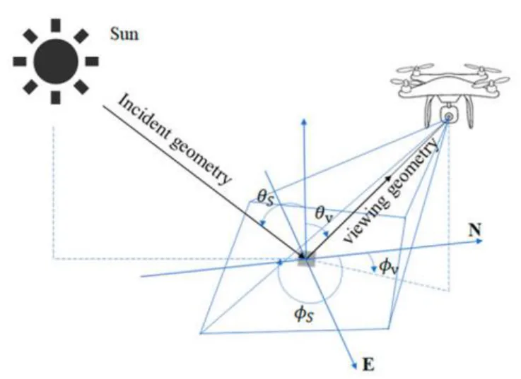
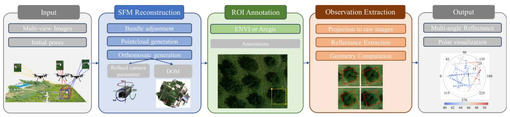
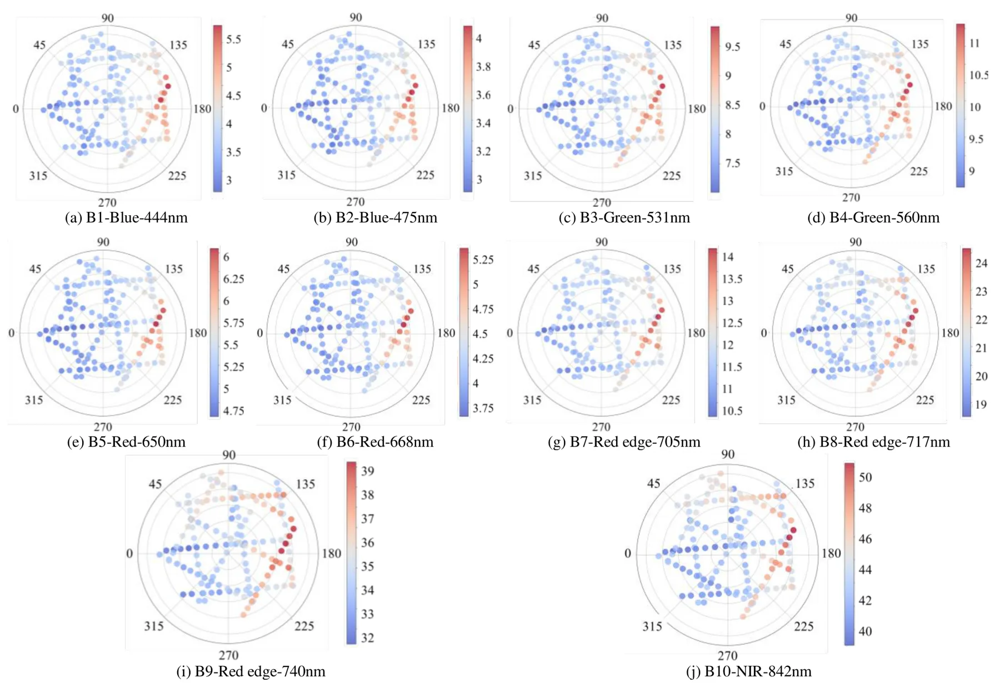
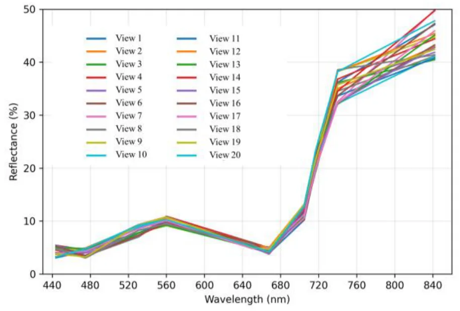

UAV 多光谱影像中的多角度反射各向异性观测Multi-Angular Reflectance Anisotropy Observed from UAV Multispectral Imagery
偏航测遥感与辐射校正，非 SLAM 核心；但对 UAV 三维重建、正射产品和多光谱地图质量有实际意义。
一句话工作总结
该研究用 SFM 几何回投提取 UAV 多光谱多角度观测，量化视角对反射率一致性的影响。
摘要
低空 UAV 多光谱影像由于飞行高度低和视场宽，天然包含多角度观测，这可能引入由几何驱动的辐射变化。本文提出一个几何感知的多角度观测提取流程，从 BRDF 角度量化观察几何效应。方法首先通过结构光束法（SFM）精化相机内外参，然后把正射图上的同质区域回投到不同视角的多个原始子图，从而为同一地物目标联合提取多波段 reflectance 和观测几何参数。随后在 VZA/RAA 域中进行极坐标可视化分析。草地目标结果显示十个波段均存在明显反射各向异性，红边和近红外波段最大/最小反射差异达到 119–137%。
UAV multispectral imagery naturally contains multi-angular observations due to low flight altitude and wide field-of-view imaging, which may introduce geometry-driven radiometric variability. This study proposes a geometry-aware multi-angular observation extraction workflow to quantify observation-geometry effects from a BRDF perspective. Specifically, camera intrinsics and extrinsics are refined via structure-from-motion (SFM), and homogeneous regions annotated on an orthomosaic are reprojected onto multiple raw sub-images acquired from different viewpoints. This enables joint extraction of multi-band reflectance and observation geometry parameters for the same ground targets under varying viewing directions. The extracted observations are further analyzed using band-wise polar visualization in the (VZA, RAA) domain. Results on a grassland target show clear reflectance anisotropy across ten bands, with red-edge and nearinfrared bands exhibiting 119-137% variability between maximum and minimum reflectance, indicating non-negligible observation-geometry effects on radiometric consistency.
中文解读摘录
- 作者：Ray Zhang, Marcus Greiff, Thomas Lew, John Subosits；类别：cs.CV / cs.AI / cs.RO；发布日期：2026-06-09；备注：16 pages, 12 figures；采集 score=14
- 核心问题：局部点云配准在 LiDAR/RGB-D tracking 中通常依赖 correspondences 或 ICP 类最近邻，特征稀疏、退化或外观变化时容易漂移；RKHS/CVO 类 correspondence-free 方法更稳但一阶优化速度偏慢。
- 方法亮点：把点云表示为带 point-wise anisotropic kernels 的连续函数，核函数编码局部几何，使法向方向更强约束、切向方向更宽松；优化上提出带近似 Riemannian Hessian 的二阶流形优化。
- 结果信号：相对以往一阶 RKHS 配准 solver 最高加速约 10×；在驾驶域 LiDAR tracking 的特征稀疏场景中，平移和旋转漂移均降低超过 55%；RGB-D 与物体配准 benchmark 也显示比 ICP 类方法更稳。
- 关注价值：这是今天最接近 SLAM 前端/里程计的工作。若开源或实现成本可控，值得尝试替换/增强 frame-to-frame LiDAR odometry、RGB-D odometry 和全局初始化后的精配准模块。
图表/页面预览

{kind=link}

{kind=link}

{kind=link}

{kind=link}
